500 Queens
Read the complete supplied reference online, or download the original file.
Original source material, including its historical dates and proposals.
Slide 1 of 15
{kind=link}
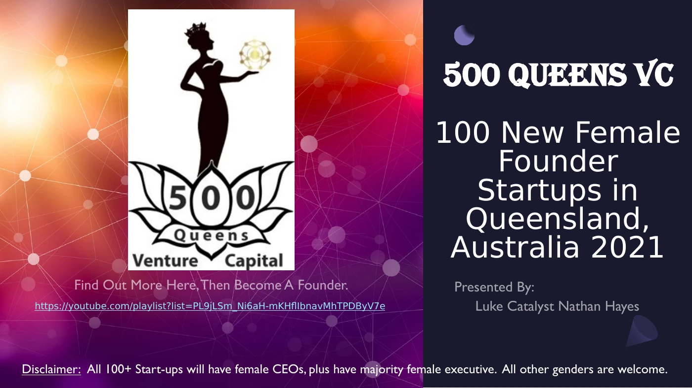
Read selectable text for slide 1
Text extracted from this page. Use the page image for its original layout, tables and figures.
100 New Female
Founder
Startups in
Queensland,
Australia 2021
Presented By:
Luke Catalyst Nathan Hayes
https://youtube.com/playlist?list=PL9jLSm_Ni6aH-mKHflIbnavMhTPDByV7e
Find Out More Here, Then Become A Founder.
Disclaimer: All 100+ Start-ups will have female CEOs, plus have majority female executive. All other genders are welcome.
Slide 2 of 15
{kind=link}
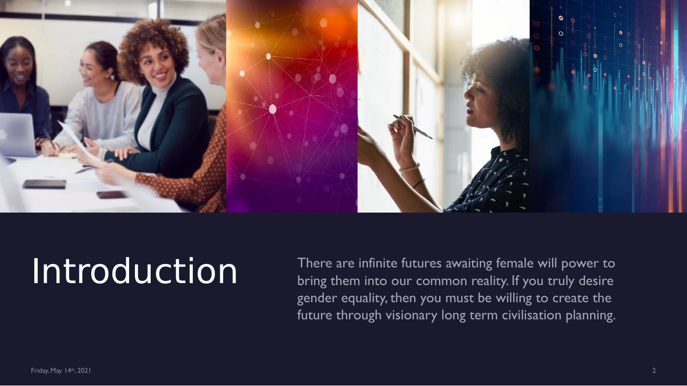
Read selectable text for slide 2
Text extracted from this page. Use the page image for its original layout, tables and figures.
2
There are infinite futures awaiting female will power to
bring them into our common reality. If you truly desire
gender equality, then you must be willing to create the
future through visionary long term civilisation planning.
Friday, May 14
th
, 2021
Slide 3 of 15
{kind=link}
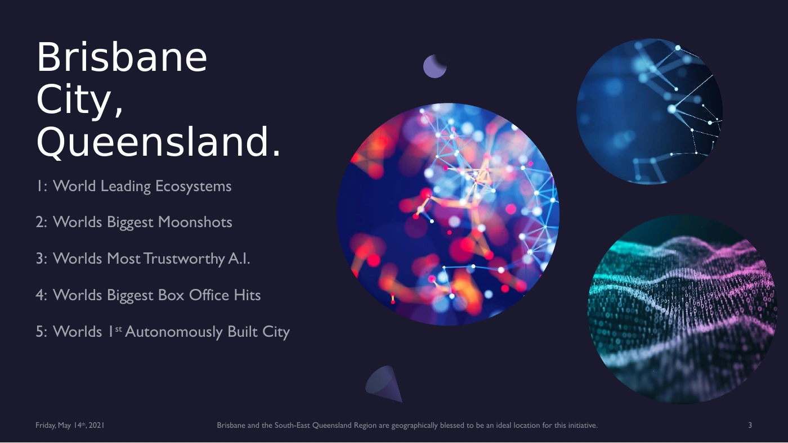
Read selectable text for slide 3
Text extracted from this page. Use the page image for its original layout, tables and figures.
City,
Queensland.
1: World Leading Ecosystems
2: Worlds Biggest Moonshots
3: Worlds Most Trustworthy A.I.
4: Worlds Biggest Box Office Hits
5: Worlds 1
st
Autonomously Built City
Brisbane and the South-East Queensland Region are geographically blessed to be an ideal location for this initiative.
3
Friday, May 14
th
, 2021
Slide 4 of 15
{kind=link}
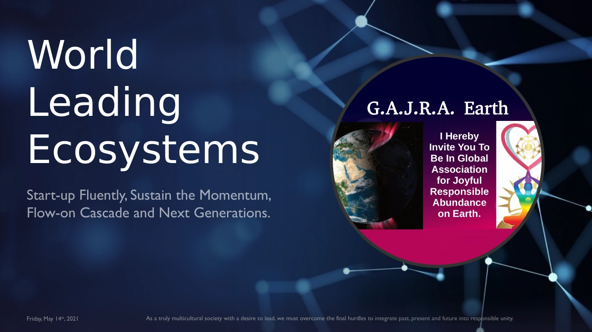
Read selectable text for slide 4
Text extracted from this page. Use the page image for its original layout, tables and figures.
World
Leading
Ecosystems
Start-up Fluently, Sustain the Momentum,
Flow-on Cascade and Next Generations.
As a truly multicultural society with a desire to lead, we must overcome the final hurdles to integrate past, present and future into responsible unity.
Friday, May 14
th
, 2021
Slide 5 of 15
{kind=link}
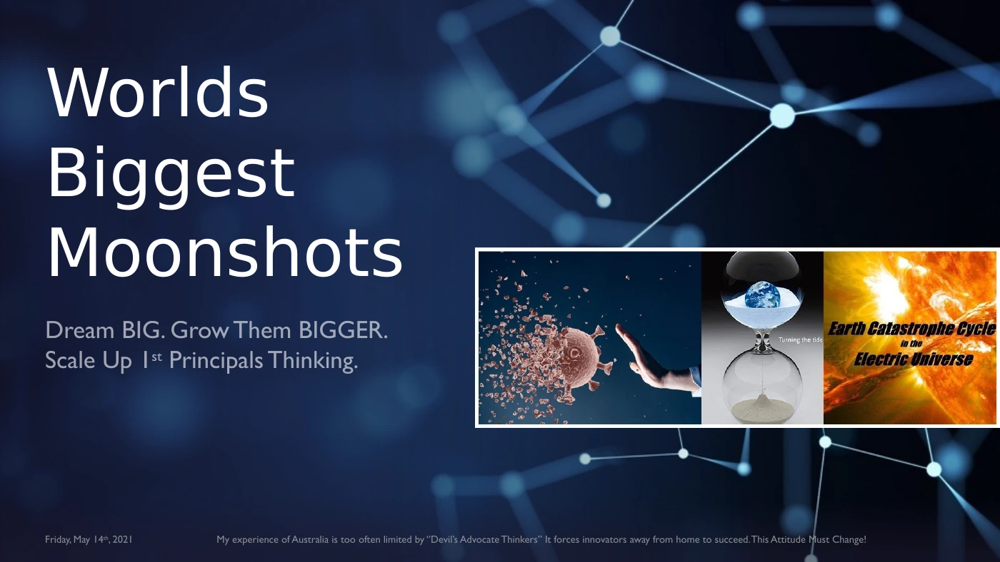
Read selectable text for slide 5
Text extracted from this page. Use the page image for its original layout, tables and figures.
Worlds
Biggest
Moonshots
Dream BIG. Grow Them BIGGER.
Scale Up 1
st
Principals Thinking.
My experience of Australia is too often limited by ‘’Devil’s Advocate Thinkers” It forces innovators away from home to succeed. This Attitude Must Change!
Friday, May 14
th
, 2021
Slide 6 of 15
{kind=link}
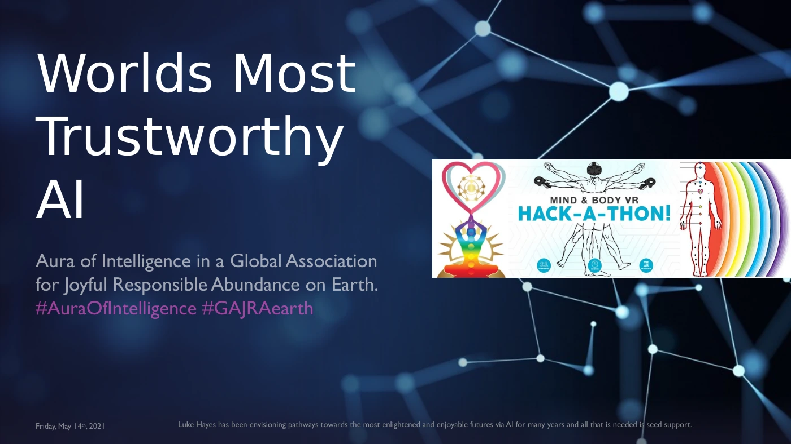
Read selectable text for slide 6
Text extracted from this page. Use the page image for its original layout, tables and figures.
Worlds Most
Trustworthy
AI
Aura of Intelligence in a Global Association
for Joyful Responsible Abundance on Earth.
#AuraOfIntelligence #GAJRAearth
Luke Hayes has been envisioning pathways towards the most enlightened and enjoyable futures via AI for many years and all that is needed is seed support.
Friday, May 14
th
, 2021
Slide 7 of 15
{kind=link}
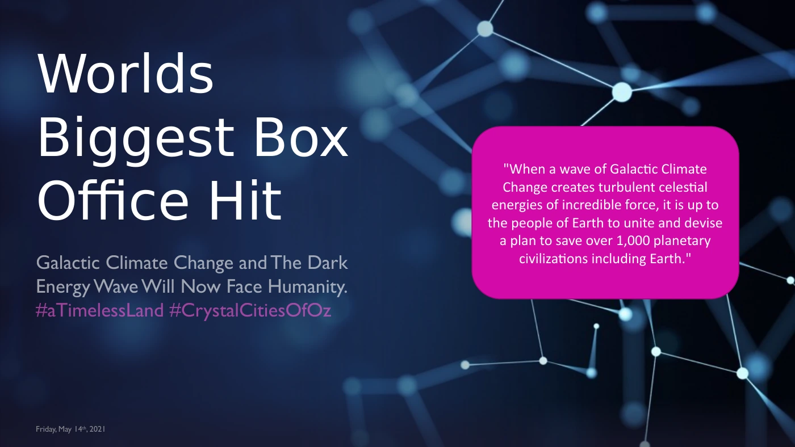
Read selectable text for slide 7
Text extracted from this page. Use the page image for its original layout, tables and figures.
7
Worlds
Biggest Box
Office Hit
Galactic Climate Change and The Dark
Energy Wave Will Now Face Humanity.
#aTimelessLand #CrystalCitiesOfOz
Friday, May 14
th
, 2021
"When a wave of Galactic Climate
Change creates turbulent celestial
energies of incredible force, it is up to
the people of Earth to unite and devise
a plan to save over 1,000 planetary
civilizations including Earth."
Slide 8 of 15
{kind=link}
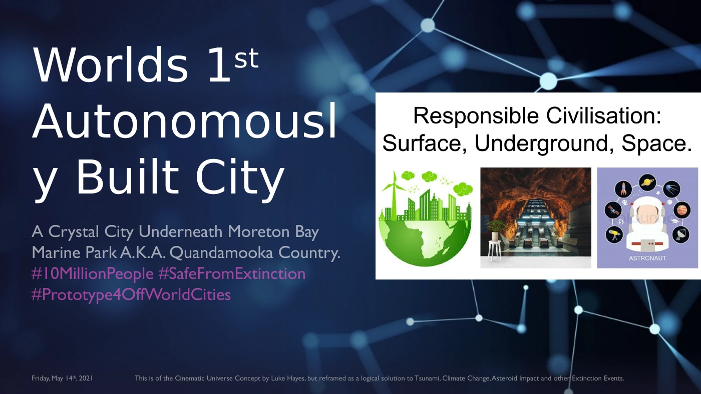
Read selectable text for slide 8
Text extracted from this page. Use the page image for its original layout, tables and figures.
Worlds 1
st
Autonomousl
y Built City
A Crystal City Underneath Moreton Bay
Marine Park A.K.A. Quandamooka Country.
#10MillionPeople #SafeFromExtinction
#Prototype4OffWorldCities
This is of the Cinematic Universe Concept by Luke Hayes, but reframed as a logical solution to Tsunami, Climate Change, Asteroid Impact and other Extinction Events.
Friday, May 14
th
, 2021
Slide 9 of 15
{kind=link}
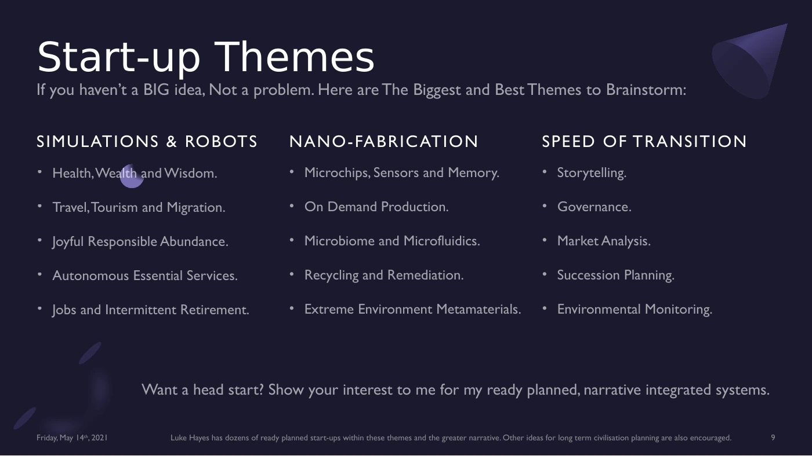
Read selectable text for slide 9
Text extracted from this page. Use the page image for its original layout, tables and figures.
SIMULATIONS & ROBOTS
•
Health, Wealth and Wisdom.
•
Travel, T ourism and Migration.
•
Joyful Responsible Abundance.
•
Autonomous Essential Services.
•
Jobs and Intermittent Retirement. NANO-FABRICATION
•
Microchips, Sensors and Memory.
•
On Demand Production.
•
Microbiome and Microfluidics.
•
Recycling and Remediation.
•
Extreme Environment Metamaterials. SPEED OF TRANSITION
•
Storytelling.
•
Governance.
•
Market Analysis.
•
Succession Planning.
•
Environmental Monitoring.
Friday, May 14
th
, 2021
Luke Hayes has dozens of ready planned start-ups within these themes and the greater narrative. Other ideas for long term civilisation planning are also encouraged.
9
If you haven’t a BIG idea, Not a problem. Here are The Biggest and Best Themes to Brainstorm:
Want a head start? Show your interest to me for my ready planned, narrative integrated systems.
Slide 10 of 15
{kind=link}
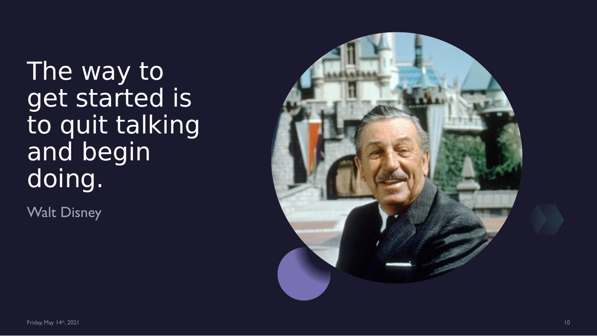
Read selectable text for slide 10
Text extracted from this page. Use the page image for its original layout, tables and figures.
get started is
to quit talking
and begin
doing.
Walt Disney
10
Friday, May 14
th
, 2021
Slide 11 of 15
{kind=link}
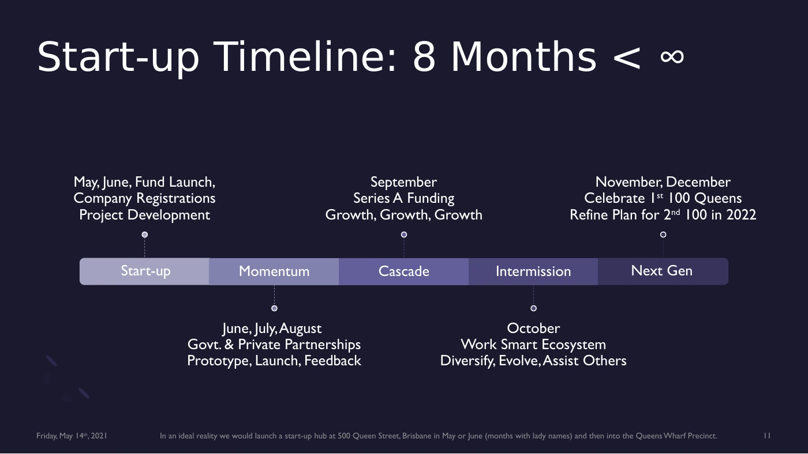
Read selectable text for slide 11
Text extracted from this page. Use the page image for its original layout, tables and figures.
Start-up
May, June, Fund Launch,
Company Registrations
Project Development
Momentum
June, July, August
Govt. & Private Partnerships
Prototype, Launch, Feedback
Cascade
September
Series A Funding
Growth, Growth, Growth
Intermission
October
Work Smart Ecosystem
Diversify, Evolve, Assist Others
Next Gen
November, December
Celebrate 1st 100 Queens
Refine Plan for 2nd 100 in 2022
In an ideal reality we would launch a start-up hub at 500 Queen Street, Brisbane in May or June (months with lady names) and then into the Queens Wharf Precinct.
11
Friday, May 14
th
, 2021
Slide 12 of 15
{kind=link}
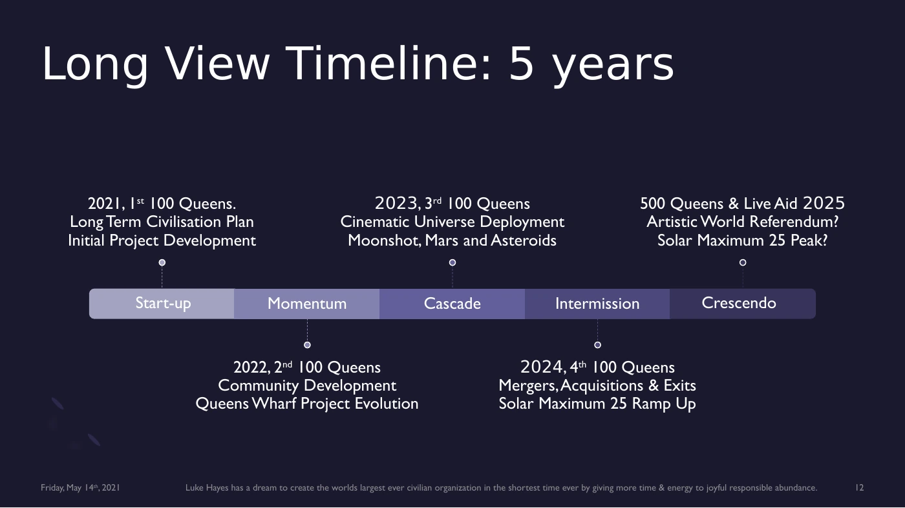
Read selectable text for slide 12
Text extracted from this page. Use the page image for its original layout, tables and figures.
Start-up
2021, 1st 100 Queens.
Long T erm Civilisation Plan
Initial Project Development
Momentum
2022, 2nd 100 Queens
Community Development
Queens Wharf Project Evolution
Cascade
2023, 3rd 100 Queens
Cinematic Universe Deployment
Moonshot, Mars and Asteroids
Intermission
2024, 4th 100 Queens
Mergers, Acquisitions & Exits
Solar Maximum 25 Ramp Up
Crescendo
500 Queens & Live Aid 2025
Artistic World Referendum?
Solar Maximum 25 Peak?
Luke Hayes has a dream to create the worlds largest ever civilian organization in the shortest time ever by giving more time & energy to joyful responsible abundance.
Friday, May 14
th
, 2021
12
Slide 13 of 15
{kind=link}
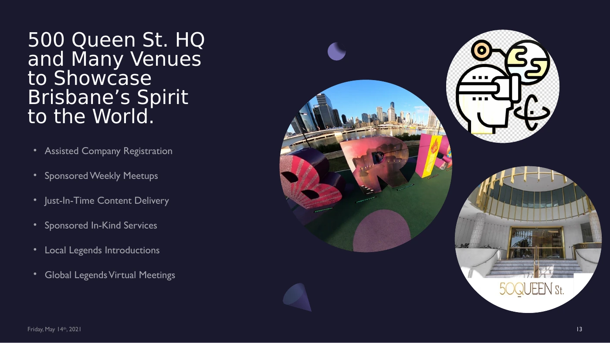
Read selectable text for slide 13
Text extracted from this page. Use the page image for its original layout, tables and figures.
and Many Venues
to Showcase
Brisbane’s Spirit
to the World.
•
Assisted Company Registration
•
Sponsored Weekly Meetups
•
Just-In-Time Content Delivery
•
Sponsored In-Kind Services
•
Local Legends Introductions
•
Global Legends Virtual Meetings
Friday, May 14
th
, 2021
13
St.
Slide 14 of 15
{kind=link}
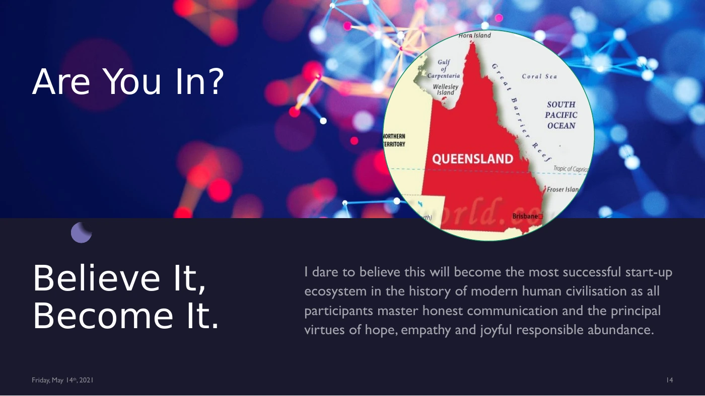
Read selectable text for slide 14
Text extracted from this page. Use the page image for its original layout, tables and figures.
Become It.
I dare to believe this will become the most successful start-up
ecosystem in the history of modern human civilisation as all
participants master honest communication and the principal
virtues of hope, empathy and joyful responsible abundance.
14
Are You In?
Friday, May 14
th
, 2021
Slide 15 of 15
{kind=link}
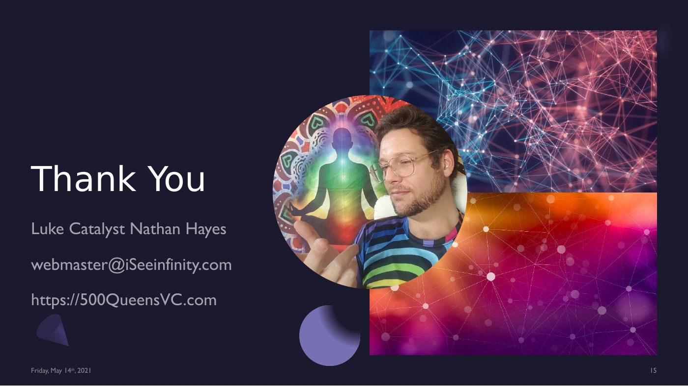
Read selectable text for slide 15
Text extracted from this page. Use the page image for its original layout, tables and figures.
Luke Catalyst Nathan Hayes
webmaster@iSeeinfinity.com
https://500QueensVC.com
15
Friday, May 14
th
, 2021